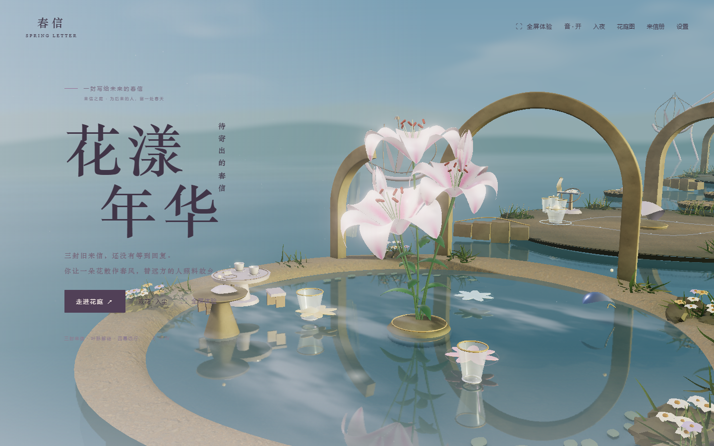
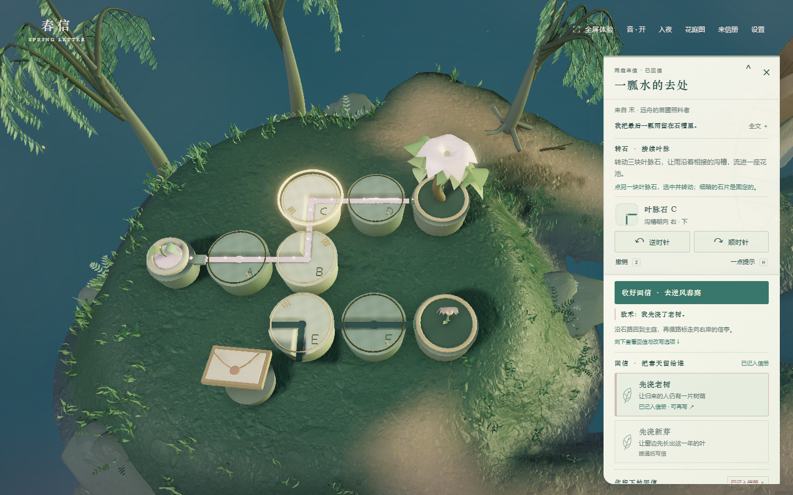
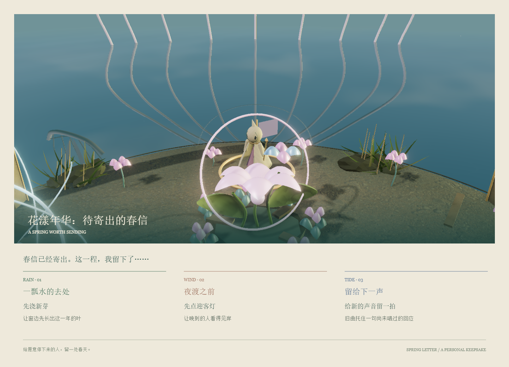

一瓢水的去处
“另一处，我回来以后再接手。”
转动三块叶脉石，学会让沟槽相接。雨可以先流向还在等人的老树，也可以去窗边的新芽。
先留一片树荫，或先长出这一年的叶。
雨庭的回应：踏风之后，气息恢复得更快。
来信之庭 · 0.6 可玩章节

这一次，花尘有了去处
看一看雨从哪里来，停在了哪一块石旁。转动叶脉，让相接的沟槽把花尘送向花池。每一次转向，都会改变眼前的流路。
接通以后，先看看会发生什么，再决定留下哪一种照料。没有倒计时催促，也没有善恶分数。可以撤销、请求提示，或回来试另一种安排。回信留下后，信纸会告诉你下一处要去哪里。
同一种手势，三种新的思考
一瓢水、一夜风、一段声音。它们不够同时照顾所有愿望，你可以先做一个小小的安排。另一种选择仍会等你回来。

“另一处，我回来以后再接手。”
转动三块叶脉石，学会让沟槽相接。雨可以先流向还在等人的老树，也可以去窗边的新芽。
先留一片树荫，或先长出这一年的叶。
雨庭的回应：踏风之后，气息恢复得更快。
“今晚会有船靠岸。”
叉形叶脉会把风分向两路。先绕开漏风的旧井，再将完整的风送到迎客灯或护种帆。
让晚到的人看见岸，或让幼种平稳过夜。
风庭的回应：在已回信的庭院之间往返。
“让它们相遇，再决定。”
一条沟槽里走着旧杯声，另一条有新的回声。两路必须同时抵达同一个花池，旋律才完整。
陪旧曲唱完，或给新的声音留出一拍。
潮庭的回应：看见金色花灵下一次开放的节拍。
同一庭的两种照料给予相同的行路能力，差别留在环境与回信里。接通只是预览；亲手回信后才记入信册。收好第三封回信，路标会沿陆路引向旧石台，等你亲手织出花桥。
故乡很远，生活仍在这里
春信不是把昨天寄回去。
是邀请后来的人，
一起生活。
离乡的方舟曾替人们保存一个春天。风暴过后，修复的花尘孕育了弥。你继承了让花庭回应的能力，却不必把每一件事都恢复成原来的样子。
背着织纹邮袋的新生命。从一瓢水开始，学着为别人做一个具体的安排。雨庭、风庭留下的是你写出的回信。
有自己的步调，会跟上，也需要你等一等。它的回应，可以接着旧曲继续生长。
他曾让花合拢着度过风暴。现在可读到的字与杯声，是留给后来者的记录。
一个惦念树与新芽，一个惦念渡口与幼种。远行之前，他们把尚未做完的小事留在庭院里。
走得快一些，也可以慢下来
回信是主线。沿途仍可以追风、写杯声、寻光，或者只看一朵花在掌风中散开、归来。
四种花形、五个系列。轻触花心，看它绽开为粒子；用风笔牵引，留一阵飘移，再等它缓缓复原。来到叶脉庭院，来源花也会散开，流向你接通的路。
追风是可以重玩的支路：选路、踏风、与游絮同行，观察花灵开合。草地与石路有不同的脚步，短短迈出一步也能听见落脚。旧杯、浅痕与记忆中的花，等你愿意停留时再去发现。
真实乐器采样组成原创配乐，鸟鸣与河流实录留在身后。三庭有不同的配器；潮庭可以让两声同拍唱完旧曲，也可以停半拍，再听见新的回答。音乐、动作音和环境声可分别调节。
听一段，刚刚发生的春天
约 76 秒的 release-d 游戏混音实录：初庭、石路与草地脚步、雨庭转石与回信、花尘与风笔。保留游戏原增益，无替换配乐。当前片段未录入可选追风与潮庭两种回声；人工听感评估仍待进行。

而最后一封信，交给你来写
织出花桥，带两枚种核走到终庭。旧灯、新芽、远航，有三种愿望；你亲手选择其中两处，让春天继续往前。
窗边绿了一点。
远处有一盏小灯，回应了一下。
三庭实际留下的照料，会一起写进寄出时的春信。可以先预览，也可以再想一想。还可以把画面与自己留下的照料保存为一张明信片，只下载到本地，是否分享由你决定。
从左岸的第一封信开始
本机入口需要游戏服务正在运行。先以桌面浏览器体验；无需游戏账号或付费素材。进度保存在当前浏览器，可在设置中管理与导出。存储受限时可选择临时旅途，并在关闭页面前导出。
桌面包约 11.9 MB，需已有 Node.js；解压后运行「启动春信.cmd」。浏览器静态包需放在 HTTP 服务中使用。素材随包提供，不需要付费账户。
喜欢自然观察、温柔解谜和短篇叙事的人，是本作首先希望邀请的玩家。约 20 分钟是章节设计目标，实际时长与陌生玩家体验仍待验证。
让期待与实际相符
这里保留制作范围、素材来源和验证记录。它是一段继续打磨的独立章节；用户群体与商业可行性，需要真实玩家来回答。
环境 HDR 与部分表面贴图来自 Poly Haven；乐器采样来自 VSCO 2 Community Edition；脚步与敲击来自 Kenney，鸟鸣来自 isaiah658，河流来自 Thimras / Eike Germann，均有 CC0 来源记录。石路使用原作标注为混凝土的脚步，转石使用短敲击。花卉、角色、机关与场景结构由项目程序化制作，旋律与情境编配为本项目编写。
上方播放器为 release-d 实际游戏输出的连续片段，录制和电平核验均已归档；技术检查没有代替人工试听或耳机、扬声器的实际评估。当前没有人物配音。参考作品用于学习设计方法，不代表可以复制其资产；没有使用付费素材或付费生成接口。
先邀请 8–12 位不熟悉项目的人，分别观察目标是否清楚、首庭能否独立完成、三庭是否有不同思考、选择是否被记住。人数是小样本验证计划，不是已经建立的用户群体；具体招募文案、主持脚本与预设判断标准在产品档案中。
游戏内“留下试玩感受”由玩家自愿打开。填写后先预览，再下载本地 JSON；不上传、不自动发送，不要求姓名或联系方式。是否将文件另行分享，由玩家决定。当前没有向任何人发送招募消息。功能测试使用的是明确标记的模拟反馈，没有当作玩家评价。